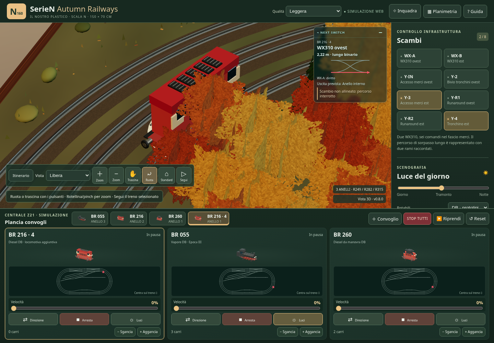

SerieN · Phase 0 accepted baseline
Phase 0 is closed at the user's request. Three loops, four terminal branches, two crossovers and the runaround are operational. Known component-profile and physical-clearance limitations remain documented for future work; this acceptance does not certify a construction template.
Canonical track plan
The simulator and all three minimaps share these coordinates. 70 nodes · 75 routes · one connected component · three main loops · four terminals. No tunnels.
White: XML. Amber: documented reconstructions. Pink: profiles awaiting certification and terminal markers. T51/T52 remain recorded as contracted zero-length joins.
Terminal branch measurements
Geometric length from the buffer to the first turnout port. The planning budget subtracts 30 mm at the port and 10 mm at the buffer. It is not a certified useful length measured to a physical fouling point.
Recorded Phase 0 checks
The browser checks cover multiple laps in both directions on all three loops, actual reversing maneuvers through both runaround branches, the fourth train and hidden train state, switches, HUD, minimaps, occupied-switch protection and STOP ALL. Viewports: 1440, 1024, 768 and 390 pixels. One WebGL context.
Chromium/SwiftShader checks functionality and responsive layout; it does not benchmark physical GPUs or certify touch operation on real tablets. This page preserves Phase 0 evidence; the current compact desk is documented in the Phase 1 report.
